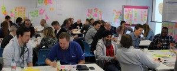
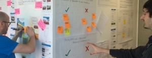

Agile has taken over the software development world. As a result we’ve created highly-efficient software engineering teams incentivized to get bug-free code shipped quickly. What we’ve failed to do is empower these teams with the decision-making mechanism necessary to decide:
It is imperative that our product teams understand how to put in place effective methods how to shape the product together.
The most effective way to achieve this is in collaborative, cross-functional teams that base their decisions on evidence from the market gained through experimentation and hypothesis. These teams bring product design, user experience, engineering, product management and organizational leadership together in a customer-centric effort to build the right product and to build the product right.

In this fun, high-energy & hands-on workshop, Jeff will teach attendees:

Jeff is a lean thinking and design evangelist, spreading the gospel of great team collaboration, product innovation and evidence-based decision making. He is also the co-author of the Lean UX book.
Jeff Gothelf is an expert in teaching teams how to work in this collaborative fashion and has captured these ideas in his book Lean UX: Applying lean methods to improve user experience. Every attendee of the workshop gets a free copy of it.
“I found the workshop extremely beneficial on both a personal and a team level. I really enjoyed how the day was broken down into pockets of lecturing and group activities to practice the lessons discussed. Even having read Jeff’s book, practicing the exercises within the team made It clear how beneficial the approach can be.”
“I found the Lean UX workshop really helpful. It made a refreshing change to hear some opinions from an experienced external source of how we can make agile work in ways other than how we already are. The contrast between the formulation of assumptions and experiments to our usual story generation and QA testing gave a valuable insight into how we can decide on our MVP, and refine how we define our priorities when scoping out work. The time spent was well worth it.”